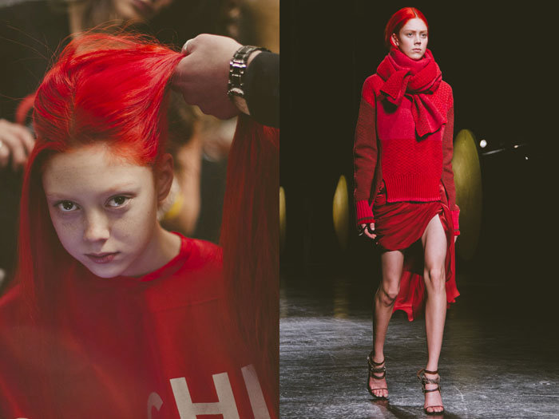
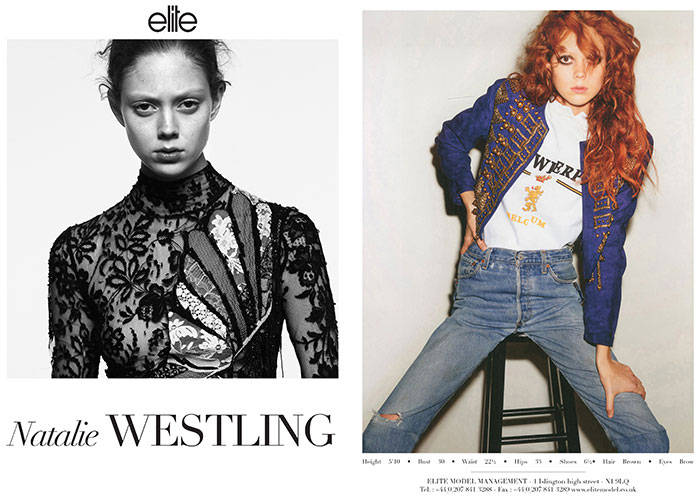
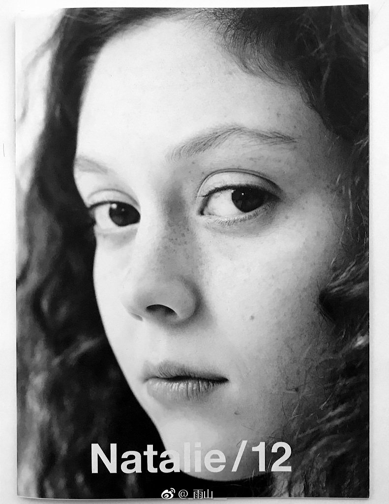
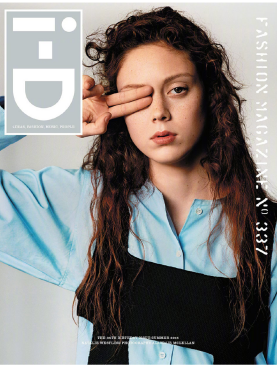
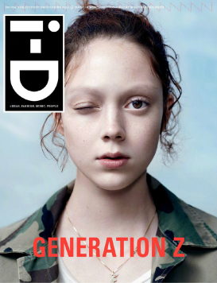
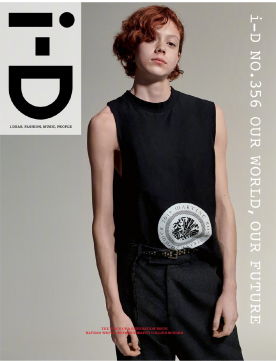

My favorite modle
红发少女Natalie Westling变成酷酷少年Nathan Westling 啦！
他在长达十年的忧郁症和焦虑症里，受困于性别认知问题，接受了很多药物和心理治疗。
最终Nathan决定勇敢面对，服用激素六个月，以男模身份面对全新的自己
------------------------------------------------------------
这位男士滑板滑的好好啊，我好羡慕
natalie---->nathan，从初中开始喜欢的女模特竟一夜之间变成男性？震惊之余 我更喜欢她/他了！

natalie westling
natalie刚出道，不顾经纪公司的反对，染了一头红发，这让她赢得了许多工作机会。

natalie westling
拍摄大片

natalie westling
秀卡

natalie westling
杂志单人封面
natalie westling
prada大片中的精彩表现

natalie westling
i-d 2015 spring 封面

natalie westling
i-d 2015 summer 封面

nathan westling
i-d 2019 封面，nathan迎来了全新的自己